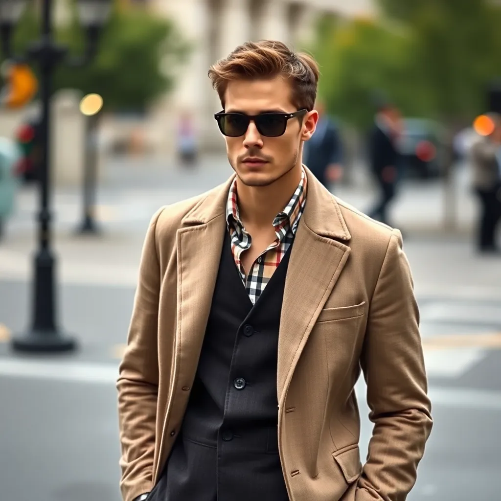

An Insider's Guide to NYFW
NYFW can be both amazingly fun & incredibly overwhelming. Especially if you've never been. Luckily, I'm here to give you an insider's guide and make your first show a pleasurable experience. By taking my tips and tricks, and following your gut, you'll have an unforgettable experience!
Getting Tickets & Picking the Shows
If you're lucky or connected, you can get an invite sans the price tag. But I wasn't so lucky or connected my first 2 years so I'm here to help you out. First, plan out which shows are the most important to you and make a schedule and this is a biggie: SET A BUDGET. If you're worrying about blowing your cash the whole time you won't have fun. Then check out prices, days, and times and prioritize the designers you want to see most. Lastly, purchase your tickets and get excited!
Dressing for the Shows
Always be true to your own sense of style; if you don't, you'll be uncomfortable the whole time and it will show. Remember, NYFW is about expressing yourself and taking in what the designers have chosen to express through their new lines. Also, it's important to wear shoes you'll be comfortable in all day. Obviously, you want to look good, but you'll be on your feet all day long, so be prepared.